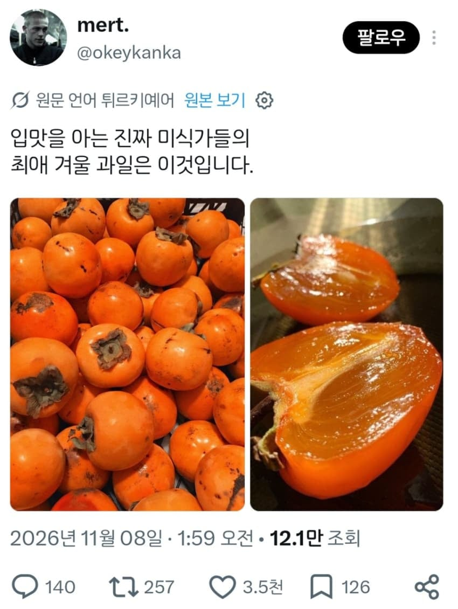
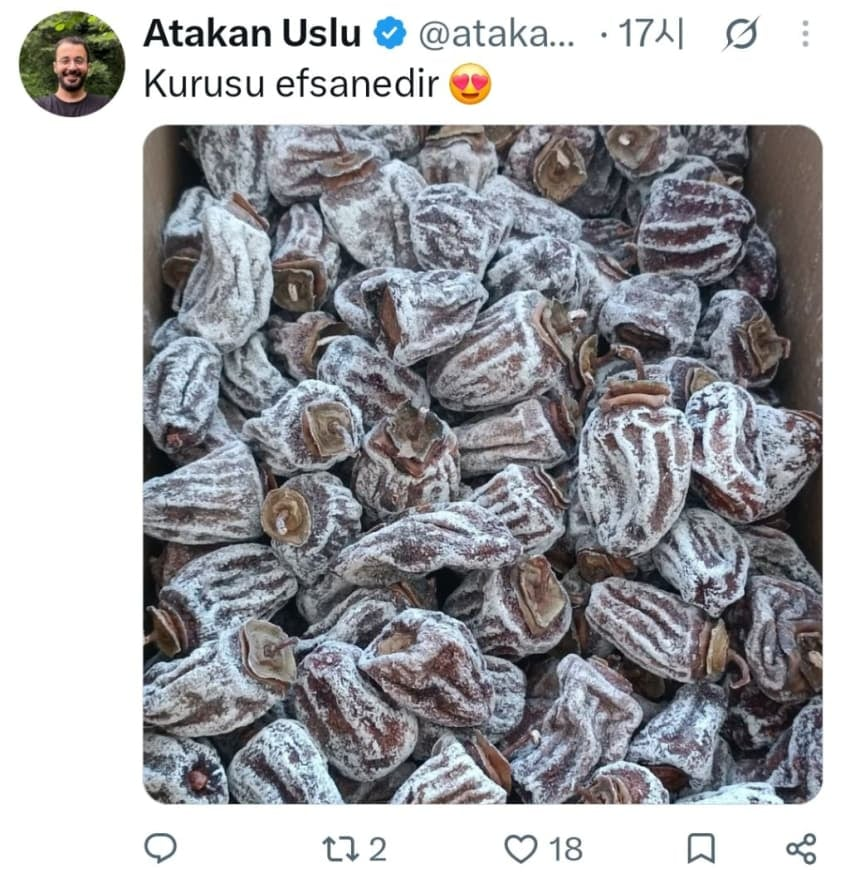

튀씨인데예
성심당파 7대손 튀김 소보로
마 이바라 이 딱 보이까는 대구빡이 우리 집안사람같다 안카나!
덜익은 홍시를 사 냉동실에 넣고 잊어버려 여름에 냉장고에서 발견해 그걸 살짝 녹여서 먹어 아이스 홍시 존맛임
곶감을 사 반을 갈라서 씨를 빼고 크림치즈랑 호두를 넣어서 말아 존나 맛있어
마트에서 사지말고 로드뷰 킨다음 상주시를 검색해 길따라 다니다가 감타래+간판 찾아서 전화주문해
직거래하는게 품질이 훨씬 좋음
덜익은 홍시 얼리면 후숙이 되나?
떫은맛좀 빠짐??
안됨ㅋㅋ 무조건 상온 후숙시켜야됨
쟤가 말한 덜익은 홍시는 딱 먹기좋은 그정도 말한거 아닐까? 물러터진거 말고
되는거면 집에 딱딱한 대봉감 냉동실에 넣으려고 햇더니..ㅋㅋㅋ ㅜㅜ
감중의 감은 월하감이다
아냐 됨 속는셈 치고 하나만 냉동실에 넣고 내년 여름에 꺼내봐
기본적으로 떫은 맛 싹 빠지고 감맛만 남음
나 상주에 외할머니집있고 친척들 곶감함
알았어 믿고 해볼게
"본좌는 상주의 건감가문의 외손주요, 속는 셈치고 해보게나"
존나 믿음직스럽네 시발 ㅋㅋㅋㅋㅋㅋ
ㄴㄴ 무조껀 상온에서 건조한 바람맞으면서 숙성시켜야한
까비넹
난 홍시랑 곶감의 중간단계 반건시였나? 그게 꿀맛
아니ㅋㅋ 맛은 있겠는데 너무 식중독균 폭발하는거 아니냐ㅋㅋ 고기도 얼리고 3개월 지나면 균 오지게 많데
너 식중독 면역 없어? 소분해서 잘 얼리면 괜찮던데 근데 감 많이 먹으면 똥을 못싸서 설사면역걸림
아자자자자잣!!!!
말캉한 홍시 얼려서 물에 씻기면 떫은 껍질만 벗겨짐. 그대로 속 알맹이만 먹는 상태로 아이스 홍시 즐겨도 맛있음
터키도 곶감이있네
애네 디저트들도 그냥 완전 설탕덩어리더만 ㅋㅋㅋ
단거 좋아해서 곶감이나 대봉감 좋아하나 보내
한국와서 먹은거지?
터키도 감 많이먹는대
저기도 감이 있구나
쟤들 입장에선 고향맛일듯 그뭐시기 대추 먹는 느낌이겠지
대추야자 ㅇㅇ
궁금해서 대추야자 1키로 사먹어봤는데 맛이 비슷함
그리고 살찜
아이스 홍시 존맛
말린과일이 은근 중독성 있음
건살구 건망고 건복숭아같은거
곶감도 아마 그런 연장선에 있을듯
조심해 어릴때 홍시 많이 먹고 화장실에서 울었어
자네 아버지가 한국 사람인가?
내가 일반 감은 너무 정액 냄새나서 못 먹는데 홍시랑 곶감은 ㄹㅇ 한박스씩 비워버린다
뭔 냄새요????
? 뭔 냄새요??
감씨앗냄새말하는가보내 해병씨앗
감나무가 걍 도심 한복판의 주택이나 빌라여도 작은 화단 조성하고 기르면 홍시 무한쌀먹 가능해서 진짜 개꿀통이더라
이사오고 난 후로 매 겨울마다 겁나 처먹고 있음
왜 아파트 베란다에서 수확 가능한 종자는 안만드는게요
아파트 사는 부루주아지를 격멸
아이고 쇤내는 지방 촌 사람이라 아파트가 싸고 살기 편합니다요
나메크성 아파트 거주민 ㄷㄷ
우린 단독두택인데 감나무 심어서 매년 홍시랑 곶감 만들어서 쟁여놓고 먹음 우리집은 돈 주고 감 사먹은적이 없음


개쩐다 감은 한중일만 있는지 알았어
쟤들도 곶감 먹음?
펄씨먼
혼시 마시씀
당분 올라온거보셈ㅋㅋㅋ
마! 니 어디 터씨고?